This framework I developed during the course CS562 - Advanced Rendering Techniques that I attended at Digipen - Bilbao during the Fall 2020 semester. In it I implemented the following rendering techniques: Ambient Occlusion, Anti-Aliasing, Bloom, Decals, Phong Tessellation, Screen-Space Lines For Conveying Shape.
I wrote the framework entirelly in c++ with OpenGL and using the following libraries: GLFW, Assimp, Dear ImGui, Glad, GLM, JsonCpp, stb_image.
All the rendering is done in a separate thread, leaving the main thread free for other uses. As this framework was only used for rendering, the main thread does almost nothing. The rendering takes the differed shading approach. I implemented some lighting optimizations which enable having hundreds of lights with minimal time cost. Most of the scenes use a g-buffer with depth, normals, for most of the scenes.
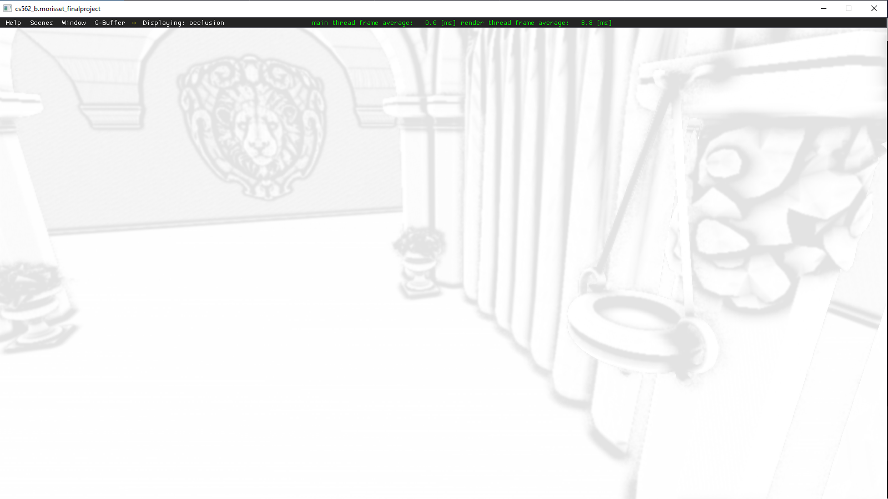
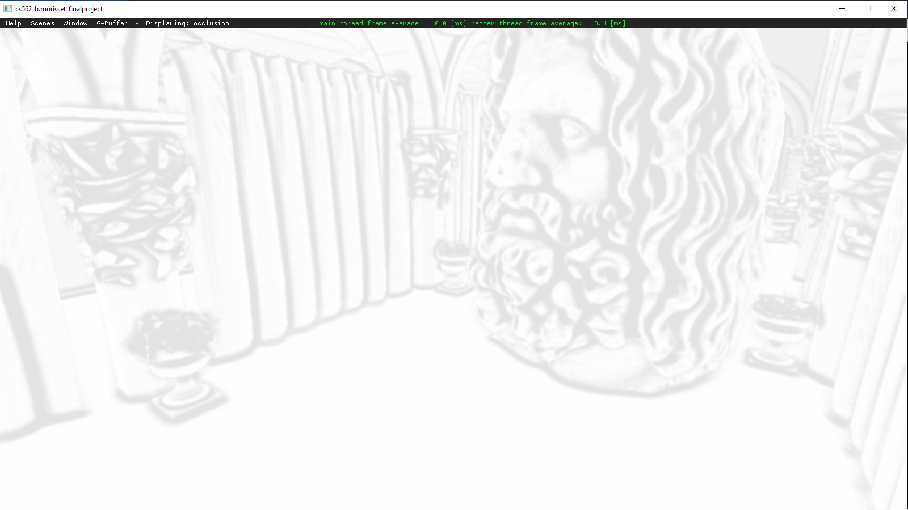
I implemented my lose interpretation of the technique as described in the paper Image-Space Horizon-Based Ambient Occlusion.
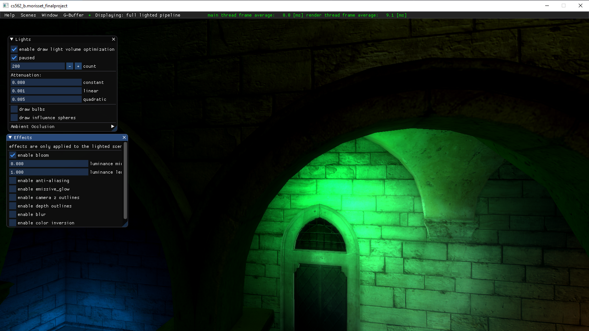
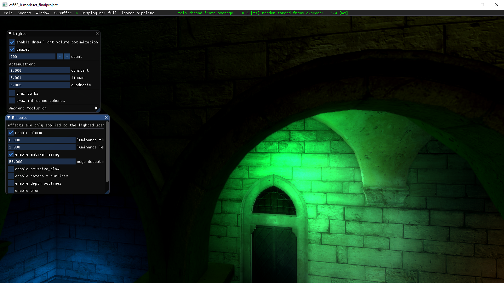
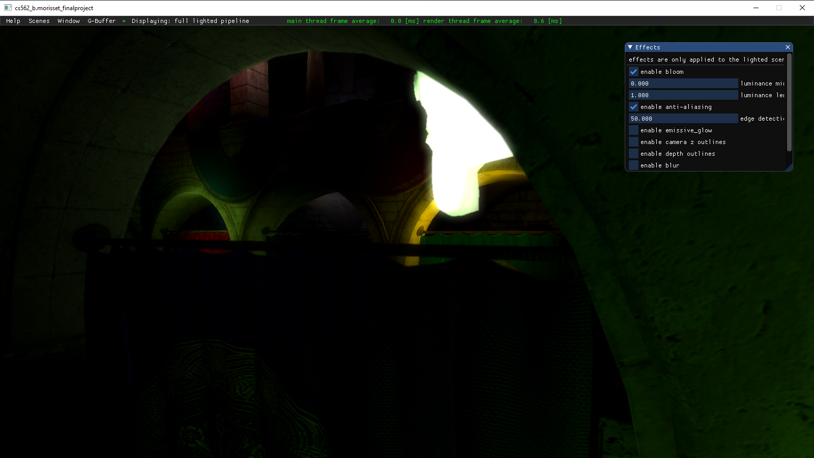
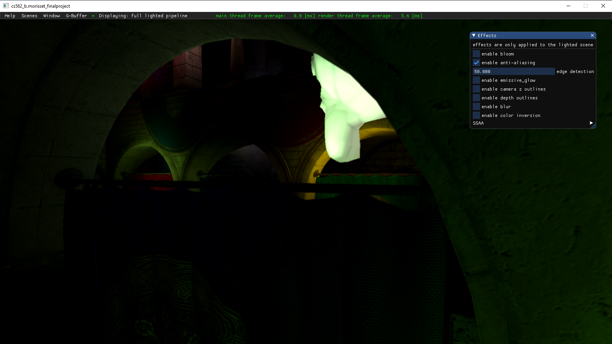
This post processing technique makes high luminance pixels 'spill' into their neighboring pixels, thus creating a hallo effect.
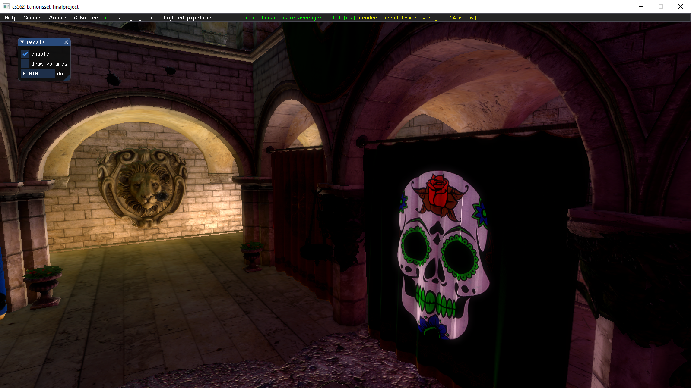
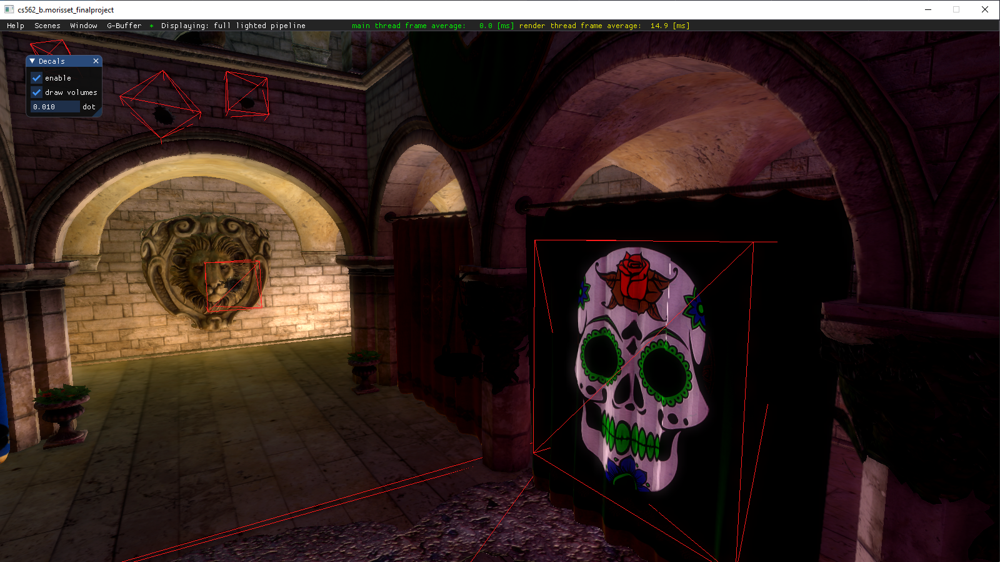
This technique creates additional geometry on flat faces of a mesh to make the mesh look more roundish.
I implemented the technique as described in the paper Phong Tessellation.
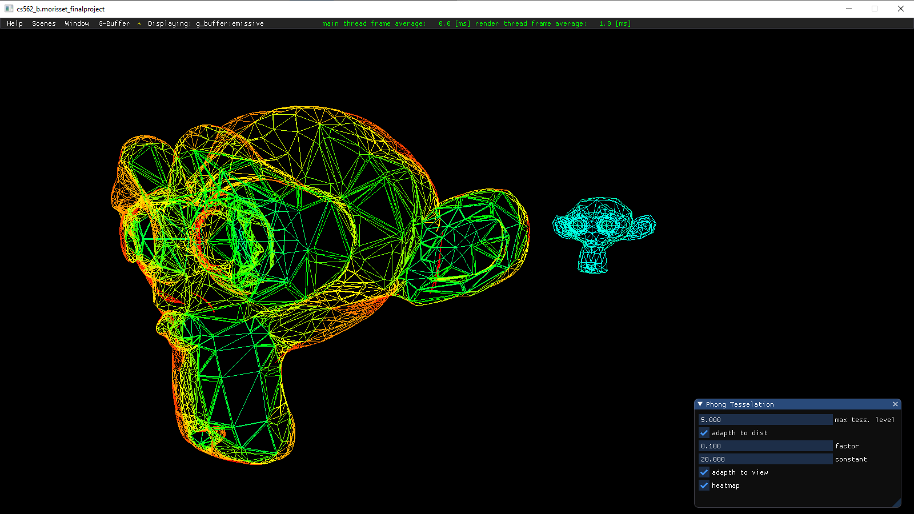
This technique creates additional geometry on flat faces of a mesh to make the mesh look more roundish. It takes into acount the distance to the camera and the facing of the faces to avoid creating geometry where it in not needed.
I implemented the technique as described in the paper Phong Tessellation.
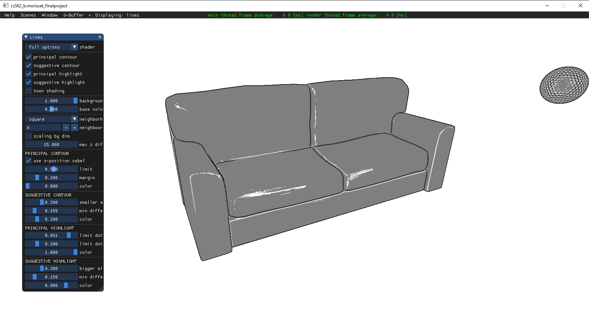
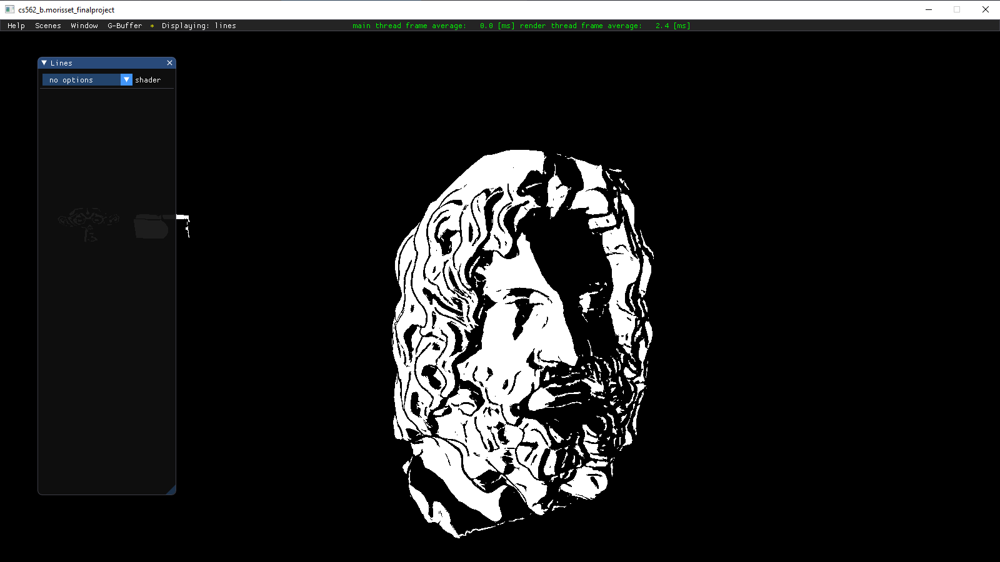
As my final project for the course, I adapted the techniques described in the papers Suggestive contours for conveying shape and Highlight lines for conveying shape to work in screen-space as a post processing effect.
You can read the details of my implementation here.
Click here to download the executable.